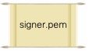
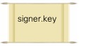
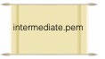
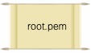
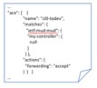
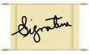

Why Sign?
The purpose of signing a MUD file is so that it can be validated and integrity checked from a location other than the web server. In addition, signing provides an additional layer of protection against attacks. If the MUD file server itself is compromised, the MUD file can only be tampered with if the attacker is also able to generate a valid signature that the MUD manager will accept.
What do I need to sign?
You need a document signing certificate from a well known certificate authority (CA) and an associated private key. You also need any intermediate certificates that you would receive with your signing certificate. Finally, your mud file should reference the signature URL. By default, MUDMaker assumes that the signature file will reside directly next to where the MUD file resides, and it will append "p7s" to the end of the file.
For example, if the MUD file is https://mud.example.com/thermostat.json, the signature file by default will be named https://mud.example.com/thermostat.p7s.
The following table describes each file needed to sign or verify a MUD file:
|  |
This is your signing certificate that you receive from the CA. |
|  |
This is the private key associated with the signing certificate. Don't lose it and keep it protected! |
|  |
This is an intermediate certificate that your CA will have provided you. It is typically in the same file as the certificate you received. Intermediate certificates are used in the validation chain between the signing certificate and the root certificate that MUD managers can be expected to have. |
|  |
This is the root certificate. It is not necessary to use the root certificate to sign. However, the root certificate must be available to verify the signature. MUD file managers will have root certificates of well known CAs. In fact, they may have intermediate certificates of well known CAs, but it is best not to count on that. |
|  | The MUD file that you generated with mudmaker. For our example, we assume it is stored as mudfile.json. |
|  |
The signature file that is generated at the end of this process. |
Signing Operation
To sign the MUD file, you can issue the following command:
% openssl cms -sign -signer signer.pem -in mudfile.json -inkey signer.key -binary -outform DER \
-certfile intermediate.pem -out mudfile.p7s
See that mudfile.p7s? That is the signature.
Verifying Operation
To verify that your MUD
file is properly signed:
% openssl cms -verify -in mudfile.p7s -inform DER -content mud.json -binary \
-CAfile root.pem -out /dev/null
Verification successful